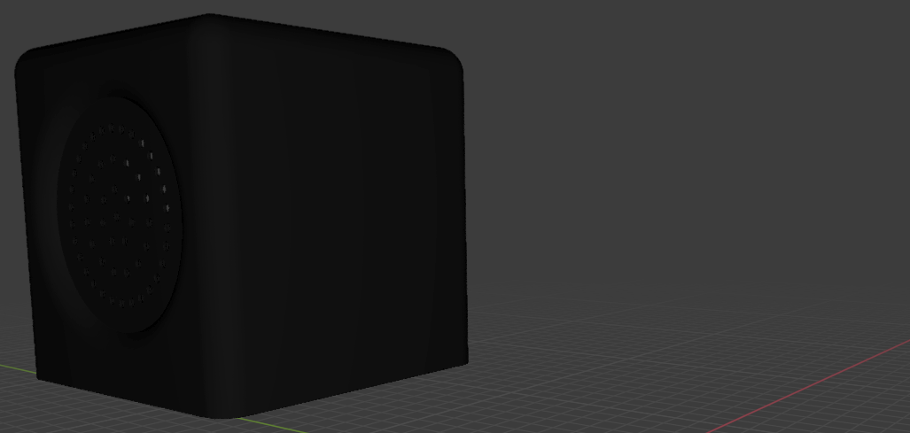
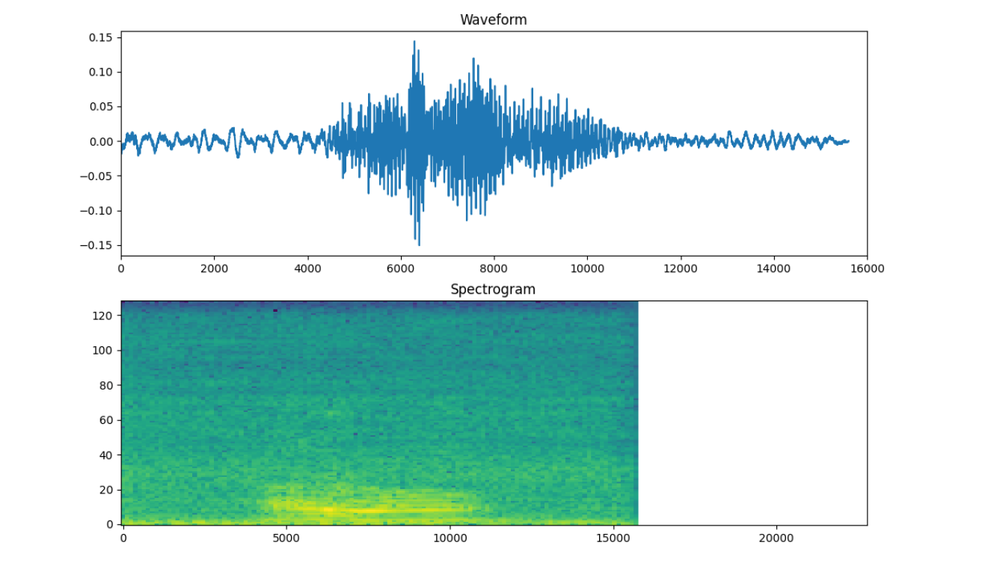

Prototyping smart objects

After the pandemic hit, most of the lectures had to happen via Zoom. This was especially unfortunate for the courses, that were going to teach us about electrical engineering. Howsoever, our professor decided to send all the equipment required to each of the students.
This way, everyone learned to solder together different components at their desk at home, designed their own circuit board and gave it into production, which was definitely one of my highlights during lockdown. I built a glove that would make a sound according to the distance an ultra-sound-sensor measured and called it 'Dal Segno'. I also tried to be a little artistic about it and mapped the beeping sound to the keys of a piano and their lengths to those of notes. The video from the final presentation will be linked here.

In collaboration with some students from KISD (Cologne International School of Design), we had a design course during our fifth semester. My team created a prototype as a radio-mockup to keep track of the human death count worldwide. Complying to the task, Dunne & Raby, the famous design couple, inspired the work.
A showcase from the last demonstration can be found here.

One of the more fun projects we did during our studies was the prototyping of remote controlled vehicles to explore the study program's location. My team tackled the hardest potential challenge of trying to build a flying zeppelin.
Although it never flew for longer than a couple of seconds, we still had a lot of fun with microcontrollers and the according design challenges. Getting the weight of the prototype right proved to be the hardest challenge.

A major project during my fourth semester had the internet of Things, a new Web of devices, as a topic. My teammate and I designed a Lock system which could, in theory, remotely control your lock via an app and via voice control, eliminating the possibility of losing your keys.
As it is always the case, when starting from scratch with nothing more than an idea, the only thing certain about the plan you start off with is that it will be subject to change. While the prototype stayed rather impractical until the end, we learned a lot about Machine Learning, microcontrollers, and more. A final presentation video can be seen here.